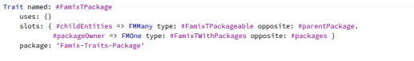

First-class customizable instance variables
- Instance variables described by objects, too. This makes it easy to implement, for example, much smarter instance variables like variables that keep bidirectional managed references between two objects. A simple assignment then automatically updates the other side of the reference, too.
Part of a general language meta-model that defines many-to-one relation between package and its owner. When you secify a class package with a simple assignment, the class is added to the child entities collection of the package automatically.
